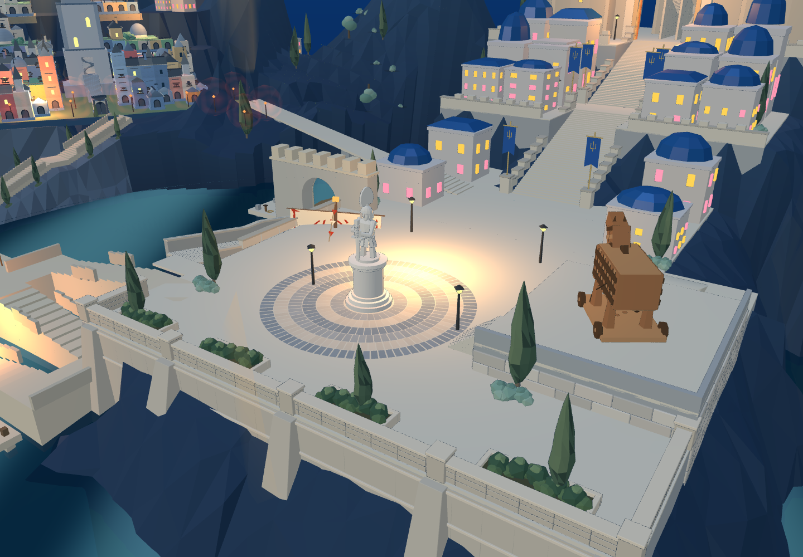
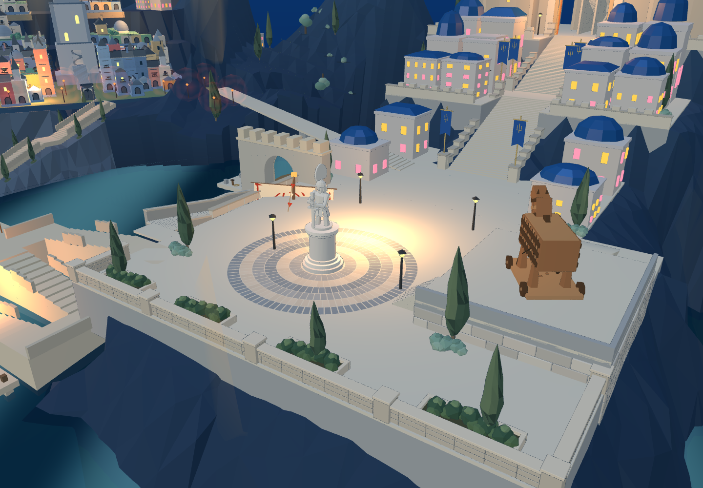
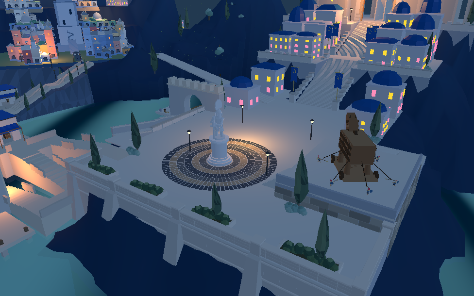

广场台基接入山崖
已进入 8931原游戏 和同一Godot工程。沿实际岩面建立连续石砌台基与五处扶壁，保留左侧城门、折返台阶与开放广场。

实际网页：临水立面增加分层腰线和随岩面高差变化的支撑。
修改前，同一机位。
同一Godot工程实景。Blender完成边角处理，两个合并材质面、1232三角形。66处岩面采样用于落地；扶壁底角埋入岩面至少0.299米。接地记录 · 原生几何核对 · 原短剑兵202段通路
这一批完成前侧台基支撑。更完整的滨水建筑层次、主堡与山体比例和完整攻城仍未完成。